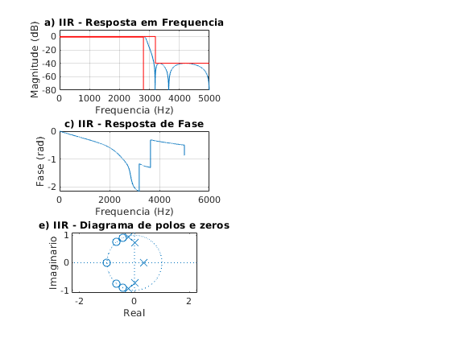
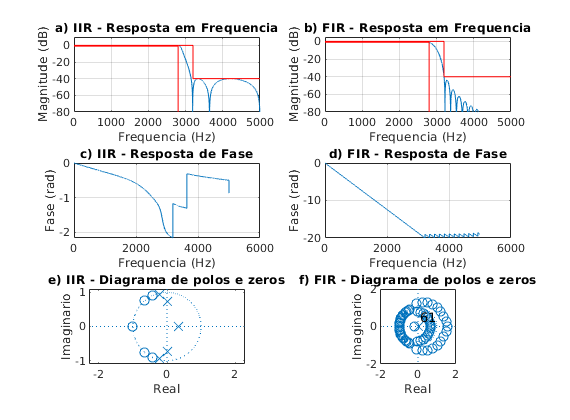

Contents
% Projeto filtro 1 % LP - (fa = 10000 Hz, f1 = 2800 Hz; f2 = 3200 Hz, Ap = 1 dB, As = 40 dB, GdB = 0 dB) close all; clear all; clc; ExecutarAjuste = 1;
Especificacoes
Ap = 1; As = 40; GdB = 0; fa_espec = 10000; fp_espec = 2800; fs_espec = 3200; wa_espec = 2*pi*fa_espec; wp_espec = 2*pi*fp_espec; ws_espec = 2*pi*fs_espec; Wp_espec = 1; Ws_espec = ws_espec/wp_espec; tetha_s_espec = ws_espec/(wa_espec/2); tetha_p_espec = wp_espec/(wa_espec/2); lambda_s_espec = 2*tan(tetha_s_espec * pi/2); lambda_p_espec = 2*tan(tetha_p_espec * pi/2); Os_espec = lambda_s_espec/lambda_p_espec; Op_espec = 1; % Ajustes if ExecutarAjuste delta = (3200-3102)/2; else delta = 0; end fa = fa_espec; wa = wa_espec; fp = fp_espec + delta; fs = fs_espec + delta; wp = 2*pi*fp; ws = 2*pi*fs; Wp = wp_espec; Ws = ws/wp; tetha_s = ws/(wa/2); tetha_p = wp/(wa/2); lambda_s = 2*tan(tetha_s * pi/2); lambda_p = 2*tan(tetha_p * pi/2); Os = lambda_s/lambda_p; Op = 1;
IIR Eliptico
[n, Wn] = ellipord(Op, Os, Ap, As,'s'); % n = n - 1; [b,a] = ellip(n,Ap,As, Wn, 's');
Transformacao de frequencia
LP para LP
syms p;
Np(p) = poly2sym(b, p);
Dp(p) = poly2sym(a, p);
Hp(p) = Np(p) / Dp(p);
pretty(vpa(collect(Hp(p)), 5))
31 4 15 3 32 2 16
(3.0487 10 p - 4.4374 10 p + 1.4282 10 p - 1.0235 10 p
32 32 5 32 4 33 3
+ 1.4918 10 )/(6.4904 10 p + 5.9932 10 p + 1.1988 10 p
32 2 32 32
+ 7.3291 10 p + 5.1152 10 p + 1.4918 10 )
Normalizando de acordo com p^n
syms s;
Hs(s) = collect(subs(Hp(p), s/lambda_p));
pretty(vpa(Hs(s), 3))
[N, D] = numden(Hs(s));
bs = sym2poly(N);
as = sym2poly(D);
an = as(1);
bsn = bs/an;
asn = as/an;
Hsn(s) = poly2sym(bsn, s)/poly2sym(asn, s);
pretty(vpa(Hsn(s), 5))
92 4 77 3 94 2 78
(9.78 10 s - 3.55 10 s + 2.85 10 s - 5.1 10 s
95 93 5 94 4 94 3 95 2
+ 1.85 10 )/(8.34 10 s + 1.92 10 s + 9.59 10 s + 1.46 10 s
95 95
+ 2.55 10 s + 1.85 10 )
4 -17 3 2 -16
0.11719 s - 4.2553 10 s + 3.4169 s - 6.1088 10 s + 22.214
------------------------------------------------------------------
5 4 3 2
s + 2.3037 s + 11.497 s + 17.534 s + 30.531 s + 22.214
Transformando em Z (bilinear)
syms z;
aux = 2*((z-1)/(z+1));
Hz(z) = collect(subs(Hs(s), aux));
pretty(vpa(Hz(z),3))
[Nz,Dz] = numden(Hz(z));
bz = sym2poly(Nz);
az = sym2poly(Dz);
an = az(1);
bzn = bz/an;
azn = az/an;
Hzn(z) = poly2sym(bzn,z) / poly2sym(azn,z);
pretty(vpa(Hzn(z),5))
95 5 95 4 95 3 95 2 95
(1.58 10 z + 4.97 10 z + 8.28 10 z + 8.28 10 z + 4.97 10 z
95 96 5 93 4 96 3 95 2
+ 1.58 10 )/(1.31 10 z + 7.69 10 z + 1.73 10 z - 4.28 10 z
95 95
+ 5.82 10 z - 2.33 10 )
5 4 3 2
0.12015 z + 0.37904 z + 0.63184 z + 0.63184 z + 0.37904 z + 0.12015
-----------------------------------------------------------------------
5 4 3 2
z + 0.0058624 z + 1.3167 z - 0.32649 z + 0.44365 z - 0.17764
Inicio PLOT (filtro IIR)
figure(1) subplot(321) escala = fa/2; [hz, wz] = freqz(bzn, azn, linspace(0, pi, 10000)); plot(wz/pi*escala, 20*log10(abs(hz))); xlim([0 fa/2]); ylim([-80 10]) title('a) IIR - Resposta em Frequencia') grid on hold on plot([0,fs_espec,fs_espec,(fa/2)+1000],[0,0,-As,-As], 'r') plot([0,fp_espec,fp_espec,],[-Ap,-Ap,-80], 'r') xlabel('Frequencia (Hz)'); ylabel('Magnitude (dB)'); subplot(323) plot(wz/pi*escala, unwrap(angle(hz))/pi); grid on; title('c) IIR - Resposta de Fase') xlabel('Frequencia (Hz)'); ylabel('Fase (rad)'); subplot(325) zplane(bzn, azn); title('e) IIR - Diagrama de polos e zeros') xlabel('Real'); ylabel('Imaginario');
Calculos filtro FIR
% Projeto filtro 1 % LP - (fa = 10000 Hz, f1 = 2800 Hz; f2 = 3200 Hz, Ap = 1 dB, As = 40 dB, GdB = 0 dB) clear all; ExecutarAjuste = 1;
Especificacoes
fa = 10000; fp = 2800; fs = 3200;
Ap = 1; As = 40; GdB = 0;
wp = fp/fa*(2*pi); ws = fs/fa*(2*pi);
wc1 = sqrt(wp*ws); % media geometrica
Dw1 = ws - wp;
M1 = ceil(3.11*pi/(Dw1));
G0 = GdB;
Projeto inicial
M = M1; Dw = Dw1; wc = wc1; if ExecutarAjuste % primeiro ajuste G0 = 0.056; % db % segundo ajuste M (n/2) wp2 = 0.5741*pi; ws2 = 0.6375*pi; Dw2 = ws2 - wp2; M2 = ceil(M1*Dw2/Dw1); % nova ordem do filtro 2*M2 M = M2; % ajuste deslocamento wc2 = wc1 - ((0.0075+0.0077)/2)*pi; wc = wc2; end k = 1:M; % Low Pass bi = sin(wc*k)./(pi*k); b0 = wc/pi; b = [flip(bi) b0 bi]; m = -M:M; % wk = 0.5 + 0.5*cos(2*pi*m/(2*M+1)); % Hann wk = hann(2*M+1)'; % wk = barthannwin(2*M+1)'; % wk = bartlett(2*M+1)'; % wk = triang(2*M+1)'; % wk = hamming(2*M+1)'; b = b.*wk*10^(-G0/20); % regular altura do filtro em db
subplot(322) escala = fa/2; [h, w] = freqz(b, 1, linspace(0,pi,10000)); plot(w/pi*escala, 20*log10(abs(h))); grid on; hold on; title('b) FIR - Resposta em Frequencia') xlim([0 fa/2]);ylim([-80 5]) Amin = 80; plot([0,fs,fs,fa/2],[0,0,-As,-As], 'r') plot([0,fp,fp,],[-Ap,-Ap,-80], 'r') xlim([0 fa/2]) xlabel('Frequencia (Hz)'); ylabel('Magnitude (dB)'); subplot(324) plot(w/pi*escala, unwrap(angle(h))/pi); grid on; title('d) FIR - Resposta de Fase') xlabel('Frequencia (Hz)'); ylabel('Fase (rad)'); subplot(326) zplane(b, 1); axis([-2 2 -2 2]) title('f) FIR - Diagrama de polos e zeros') xlabel('Real'); ylabel('Imaginario');